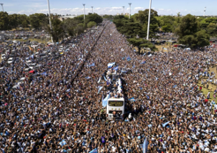

Welcome to World Cup Central
This website provides information about the FIFA World Cup, including participating teams, match schedules, and tournament history.

Why the World Cup Matters
The FIFA World Cup is one of the most popular sporting events in the world because it brings countries, players, and fans together through soccer.

Current Tournament Overview
Visitors can learn about teams, schedules, and important moments from the tournament.
Match Schedules
World Cup Central will also provide basic match schedule information, including important dates, upcoming games, and tournament updates for soccer fans.